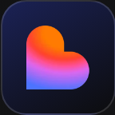

Agora a sua IA cuida do Estoque
Pergunte o que está acabando e mande lançar a compra, ali na conversa — ou deixe o seu próprio sistema fazer sozinho.
- ✓ O que está acabando
- ✓ Entrada e baixa
- ✓ Contagem de estoque
- ✓ ChatGPT, Claude e mais

Pergunte o que está acabando e mande lançar a compra, ali na conversa — ou deixe o seu próprio sistema fazer sozinho.